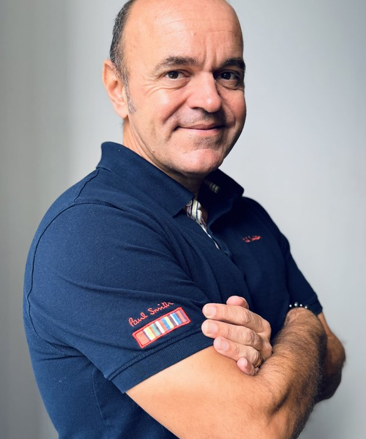

Pierre-Henri Hamburger
Associé OPTA-S — Consultant sénior & formateur en management public
Associé d'OPTA-S, Pierre-Henri Hamburger accompagne les organisations publiques et parapubliques sur leurs trajectoires de transformation et forme leurs cadres et managers depuis une vingtaine d'années. Son champ d'intervention couvre la conduite du changement, le management de proximité et transversal, la structuration du pilotage stratégique, l'accompagnement RH et organisationnel des transformations et l'ingénierie pédagogique des parcours managériaux.
Basé à La Réunion, il pilote depuis le territoire les missions de la zone océan Indien et intervient également en métropole auprès de l'État, des collectivités, des organismes de Sécurité sociale, des centres hospitaliers et des bailleurs sociaux.